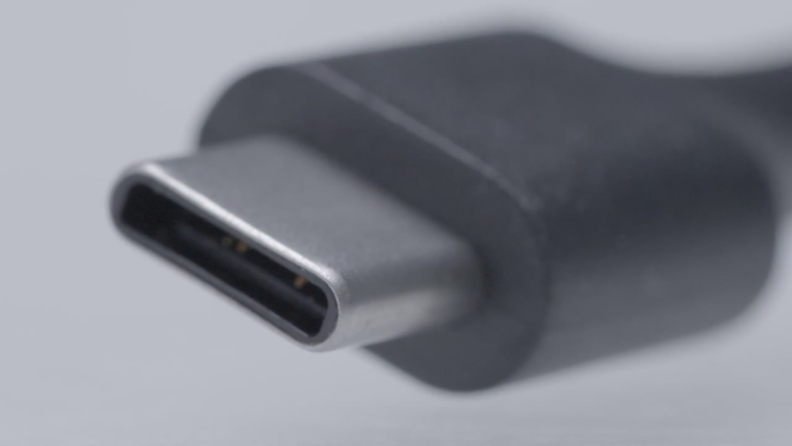

Memorijska Hijerarhija
Konkretnije, maleni konektori, strujni krugovi, protokoli za komunikaciju, konekciju i izravan kontak s PC-om. Da, ili više poznati USB. Mali uređaji na koji spremamo svoje važne podatke. Veoma praktični, velikih kapaciteta, a od nedavno i ultra brzi sa novim sučeljem. Prvo je USB bio dizajniran da spaja periferiju računala, kao miševe i tipkovnice i možda slušalice, iako to nije poželjno.
Znamo se dosta puta žaliti da ne možemo iz prvog pokušaja pogoditi USB u konektor i samo želimo čuti onaj „tu-du“ zvuk prepoznavanja drive-a na Windowsu. Tu stiže Type C. Brzine od 10Gb/s, 100W snage, slim dizajn i naravno, konektor je reverzibilan. Android smatrphoni ga sve češće koriste kao brzo punjenje, ulazi kao utor na matičnu ploču, a i sama kućišta se proizvode sa prednjnim Type C konektorom.
